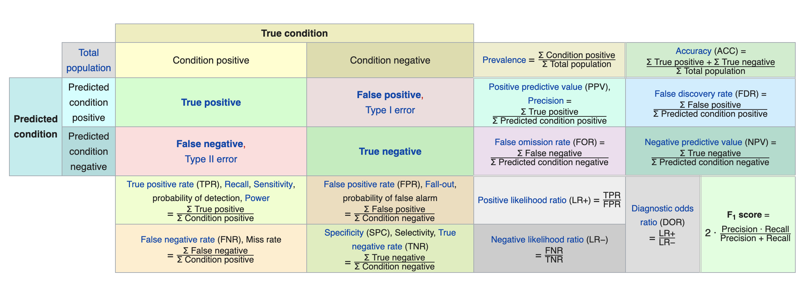

AirBnB Ratings Predictor Flask App
Now you know what your listing's worth
Here are some links for access: Github Repo, Web App
As a previous AirBnB host, maintaining a high ratings is just as important as it was agonizing. Many 5 star ratings have diminishing returns, whereas a single blimp could set you back significantly. Especially with the introduction of AirBnB's SuperHost status (claims made of 7x search exposure and average of $1200 boost in monthly income), more hosts are wary of keeping the ratings up.
The composition of ratings is mostly affected by the level of service (ability to fix unexpected problems, frequency of host interaction, helpfulness in suggestions, etc.), and this is well reflected in the reviews that the guests leave on AirBnB; however, is there something inherent about the relationship between the ratings and what's being offered?
The Project: A Product that predicts an AirBnB listing' probability of receiving a 5-star rating
To answer the question, I decided to dive deeper into the AirBnB listing itself and the rating that it receives by first developing a Classification model. The question that I asked myself was, how can this Classification model help? What can I do with it?
The answer was simple: Why not create something to actually predict a listing, since the model was generated to, well..., predict? Therefore I created a Web Application using Flask that uses the Classification Model to predict!
Airbnb 5-star Predictor App
The design of the app is simple; the user will need to input information about their listings, including neighborhood it is in (in Seattle), whether it is Instant Bookable, number of bedrooms, bathrooms, beds, prices including reservation price per night, cleaning fee, security deposit, and charges for extra people, as well as amenities.
Based on the information provided, the app uses the classification model to calculate the probability of the listing receiving a 5 star rating. It will also select one amenity as a recommendation for the host to add in order to boost that probability the highest (out of amenities that they have not selected yet). Below shows a screenshot of what it would look like:
 The app showing prediction (in blue box) and recommendation (in red box)
The app showing prediction (in blue box) and recommendation (in red box)
Having an app that works is amazing, but how was the model generated exactly? First I need data!
Collecting and Aggregating Data
Fortunately, AirBnB listings data for Seattle was well curated, and I didn't need too great of an effort to aggregate it together. Here are the sources for my data:
- Insideairbnb.com: Insideairbnb.com is an independent research company that focuses on AirBnB effect in different major cities and visualizes its data. The listings for AirBnB in Seattle (as for Feb 2019) were saved in CSV files. The data contains many information about each listing, including its host information, amenities provided, and general information such as size, rooms, bathrooms provided, etc.
- Walkscore.com: I believed one of the most important features was the walkability of the location. Walkscore.com is a well-known site that generates walkability (and bike-ability) scores known as Walkscore (and Bikescore), out of 100 points. I used their API to extract those scores for each of the listings.
- Google Geocode API: Since Walkscore API require exact physical address, and that is not given in Insideairbnb's data (or AirBnB in general), I used the lat/long info from the Insideairbnb's data and generated a physical address using Google's Geocode API.
I used all these scraped data to generate a single dataset of 5632 total listings (after cleaning the data).
What Features To Use?
With there being about 102 features about the AirBnB listings, some feature engineering was needed in order to avoid overfitting the dataset. Looking at all the features, I decided to eliminate many based on these criteria:
- Some features information that would not help with because it was already represented: i.e. Zip Code was eliminated since there was already a feature (Neighborhood) that reflected the same information
- Some were hard to either quantify or categorize into a viable feature (i.e. description of how the host will interact with the guests) Simply categorizing to a boolean feature will mean loss of information. Text analysis is something I will mention at the end.
- Some features were useless because the output was too obvious: i.e. almost every listings had "host verifications"; it's something that AirBnB now requires. Missing values on that feature was assumed to be data loss during data mining by Insideairbnb.
- Lastly, along the amenities from the listings, I decided to eliminate ones that almost every listings had, as it shows no effect on the ratings.
After applying some of these, I was left with 44 features and ready to run some classification models!
Modeling: Classification Models!
Just like any other data science workflow, I split the data into Test/Train split and worked with the Train Set. Since this is a classification problem, there were a lot of algorithms that I could implement, and I chose the following:
- K-Nearest Neighbors
- Support Vector Machine
- Logistic Regression
- Classification and Regression Trees (CART)
- Decision Trees
- Random Forest
- Gradient Boost
- XGBoost
- Adaptive Boost (Adaboost)
- Catboost
Some of these have more parameters to tune than the others (and it gets progressively complicated for some of the CART models like Adaboost or Catboost), and even with using Cross-Validation, developing a pipeline could be hard.
Fortunately scikit-learn provides two great tools for them: GridSearchCV and RandomSearchCV. They are cross-validation tools optimized for parameter tuning. Both will take all possible parameters to be tested in a grid (in the form of a dictionary). The search will be done using all possible parameters (GridSearchCV) or at random for a user-specified number of combinations (RandomSearchCV), and the parameters are selected based on a scoring metric. While I chose GridSearchCV for models that didn't take too long to train (i.e. Logistic Regression, SVM), for some of the boost models I chose to implement RandomSearchCV because of timing efficiency. All Data Science work must simulate real-world working environment, and unfortunately, no one is afforded unlimited amount of time in the pursuit of perfection.
Using these tools, we can tune the parameters... but how?
Model Selection - Is the scoring metric enough?
In a regression problem, the best model is the one that minimizes the error function (i.e. Mean Squared Error). For a classification problem such as this one, the best model is the one that optimizes a scoring metric. There are many possible scoring metric as they are metrics derived from a Confusion Matrix. Confusion Matrix, also known as an error matrix, is a table layout that allows visual representation of a classification model's performance as the rows show the classification of predicted classes and the columns represent that of the actual classes:
 The Confusion Matrix and derived metrics could confuse a lot of people!
I decided to use the ROC-AUC (Receiver Operator Characteristic Area Under the Curve), which is a curve on a True Positives vs. False Positive Rate graph and measures how capable the model is in predicting all its classes correctly (in this case, predicting 5-star ratings and non-5's correctly). Usually F1 score is also looked at in a real world problem but I chose not too because the dataset that I worked with ended up being balanced (Number of 5-star listings and the number of non-5 stars were close). Had the dataset been imbalanced, I would have used the F1 score since imbalance does not affect ROC-AUC, making it useless as a metric. Using the scoring metric, here was the model comparison:

XGBoost had the highest scoring of all the models I tested. However, notice the top 4 performing models. There is not much of a difference to definitively select XGBoost! If there were more data, or if I did higher number of K-Folds in the Cross Validation, I could have a different result. Not being convinced with the results of using the scoring metric as the sole measure of model selection, I decided to look at timing performances. I (or the users) don't want a product that produces slow results. I timed the model prediction of the test dataset (using the 4 boosting models):

Gradient Boost performed almost 3 times faster than the next fastest, and more than 8 times faster than XGBoost, the model wit the best metric performance. This was enough for me to select the Gradient Boost as my model of choice.
Predicting the ratings of the Test Set:
The holdout set was predicted using the Gradient Boost model and the result is shown in the heatmap of its confusion matrix below:

As you can see, the model is far from perfect; it incorrectly predicted 163 listings as a 5-star, and failed to predict 167 listings that are 5-stars. In a real-life world, these could have significant implications, especially financially. Someone who has a 5-star listing but was told that it was not may spend unnecessary money to make it one; someone who does not have a 5-star listing but was told that it was may lose potential future extra earnings from being a SuperHost. While the web app shows a probability instead of a hard decision, there is absolutely some room for improvements.
Future Implementations
What can be done to improve the model? How about the web app? Many future implementations will benefit both the model and the app:
- Text analysis on host descriptions - Some features from the Insideairbnb's data was not used in this classification modeling because they were text-based; often descriptions written by the hosts about the listing, its location, and other descriptions about the listing or the host. Some Natural Language Processing (NLP) can be done in order to determine keywords that contributes to ratings. This can be implemented in the app to have it suggest keywords as recommendation when talking about certain descriptions.
- Better feature engineering - Besides text analysis, there might be some better feature engineering available; in the interest of testing different models and developing pipelines for efficient modeling, I came away feeling unsatisfied about how little time was spent engineering features. While Walkscore and Bikescores were shown to be important features (most models implemented under scikit-learn, including Gradient Boosting, have feature_importance function that will list features by importance), more could have been thought of to contribute to making the data better for modeling. Even the amenities that I eliminated due to various reasons can be carefully chosen again.
- While the model is not perfect, the web app is still a viable product (in the sense of the MVP - Minimal Viable Product). The target of my product is the future AirBnB host who may or may not have a property or a room to rent yet. A great integration would be with Zillow or Redfin. It can increase my product user target from someone who is looking to rent out their space to everyone that wants to rent out a space, whether they own it yet or not. Ideally, a user can look up a property on Zillow or Redfin and immediately test its 5-star ratings potential and make a determination.
Conclusions
The bulk of the project was on developing a Classification model to correctly rate a 5-star AirBnB listings. While the model was not satisfactory (I expected a 90% scoring), I continue to learn that some data just aren't going to model well no matter how exhaustive of a data analysis and data modeling is done. I was also glad to put the model to an actual useful tool as I got to learn how to put the model into production, mimicking something that is often done in a data science workforce. The process gets you to learn to bridge that gap between being a pure data scientist and a business mindset. I look forward to producing more Flask apps with (hopefully) better models.